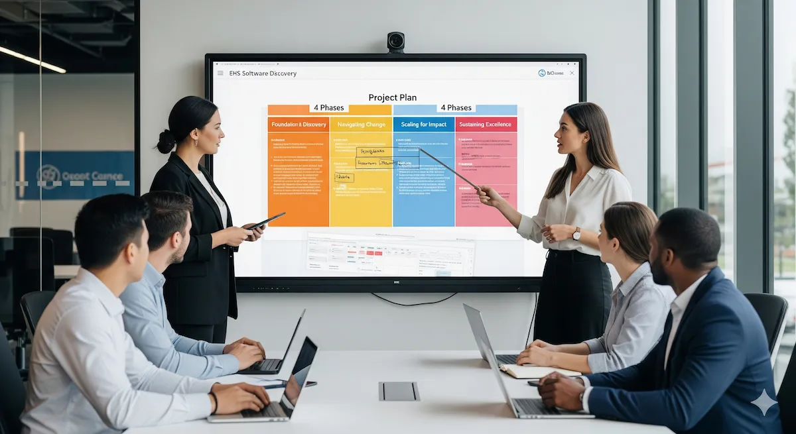

Strategic Implementation: A Phased Approach to EHS Software Deployment
Jun 6, 2025
In Part 1: EHS Software: More Than Just a Technological Fix, we challenged the idea of EHS software as a simple fix. Then, in Part 2: The Human Element: Culture & Leadership in EHS Software Success, we explored the vital roles of organizational culture, leadership, and user engagement. Now, in Part 3, we get into the "how-to" of bringing EHS software into your organization effectively. This post focuses on strategic implementation through a carefully planned, phased approach.
The idea that EHS software is a "plug and play" solution is best debunked by outlining the detailed, multi-step process needed for its successful implementation. A structured, phased approach is essential for managing complexity, reducing risks, and ensuring alignment with organizational goals throughout the EHS software project.1 Such methods, often based on established project management standards like those from the Project Management Institute (PMI)2, emphasize that each phase builds on the successes of the previous one, creating a strong foundation for what follows. This is very different from a "big bang" approach, which often leads to unexpected problems and user resistance.
Phase 1: Foundation & Discovery – The Critical Needs Analysis
This initial phase is arguably the most important, as it sets the stage for the entire project. It's not just about listing desired software features; it's a strategic effort to define the future of EHS management within the organization and identify the process changes needed to achieve that vision.
Defining Clear Objectives & Scope
The process begins with a thorough understanding of the organization's specific EHS needs and a clear statement of the problems the software is intended to solve.3 It is vital to identify the EHS processes that will be automated or improved.3 A common mistake is to simply create a 'wish list' of features, which focuses on the tool rather than the desired outcome.3 Instead, objectives should be strategically aligned with broader business goals. For example, if the goal is to foster a positive, comprehensive safety culture, the objectives must reflect this ambition, going beyond basic compliance.4 A lack of alignment on objectives is a major issue that can derail projects.4 To maintain focus and manage expectations, requirements should be carefully categorized into 'must-haves', 'should-haves', and 'nice-to-haves'.3
Comprehensive Requirements Gathering
This process must include all relevant stakeholders: EHS leaders, IT personnel, operations managers, executive sponsors, and, critically, the end-users who will use with the system daily.3 Involving those who will regularly use the EHS software in the selection process is essential.3 This collaborative approach not only ensures that the software will meet various operational needs but also builds early buy-in and a sense of ownership among users, which is crucial for later adoption.5 This phase should involve mapping business processes and considering re-engineering from the start, ensuring that the organization doesn't just automate existing inefficient processes.6
Vendor Evaluation & Selection
Choosing the right EHS software vendor is a strategic decision that extends far beyond comparing features and pricing. Organizations should carefully evaluate potential vendors based on their industry experience, the strength of their implementation process, the quality of their customer service and ongoing support, options for customization versus configuration, mobile capabilities, data security measures, system scalability, and, importantly, their proven understanding of the organization's unique business needs and EHS challenges.3 Comprehensive vendor evaluation guides often cover technology platforms, business models, specific functions, and post-implementation support.7 Organizations should look for a partner committed to their success, not just a software supplier.8
Phase 2: Navigating Change – The Pilot Program, Iteration & Training
With a clear understanding of needs and a selected vendor, the next phase focuses on carefully introducing the software, managing the related organizational change, and empowering users.
The Value of a Pilot Program
Instead of a full-scale, simultaneous rollout, a gradual approach is highly recommended. This often involves starting with one or two core features or deploying the software in a specific department, site, or user group.9 A pilot program offers an invaluable opportunity to test the software in a real-world setting, gather user feedback, identify and resolve unforeseen issues on a smaller, manageable scale, and refine system configurations. Achieving "quick wins" during the pilot phase can significantly boost user confidence and build positive momentum for the broader implementation.9 For example, starting with universally beneficial modules like task management can effectively demonstrate the software's ease of use and immediate value.9
Effective Change Management Strategies
Change management is not a side activity but an essential part of every phase of EHS software implementation, from initial communications during the needs analysis to reinforcement activities after going live. Organizational resistance to change is a common and significant challenge. Established change management frameworks like Kotter's 8-Step Model 10 or Prosci's ADKAR Model 11 provide structured methods to systematically manage the human side of the technological transition.
Kotter's Model emphasizes creating a sense of urgency, building a guiding coalition of influential stakeholders, forming a clear strategic vision, enlisting a volunteer army of change ambassadors, enabling action by removing barriers (e.g., outdated processes, resistance), generating short-term wins to build momentum, sustaining acceleration by building on early successes, and finally, instituting the change by embedding new behaviors and processes into the organizational culture.10
The ADKAR Model focuses on the individual's journey through change, ensuring each person achieves Awareness of the need for change, develops the Desire to participate and support the change, gains the Knowledge of how to change, acquires the Ability to implement required skills and behaviors, and receives Reinforcement to sustain the change.11 Key activities in any effective change management plan include clear, consistent, and multi-channel communication, active stakeholder engagement at all levels, transparently addressing fears and concerns, and clearly articulating the benefits of the new system for both the organization and individual users.9 Low user adoption, a major pitfall 9, is not solved by a single "change management workshop" but by continuously addressing the human element throughout the project.
Training and Empowering Users
Comprehensive, tailored, and ongoing training is absolutely essential for user proficiency, confidence, and ultimately, software adoption.9 Simply providing one or two days of general training is often insufficient for users to gain true proficiency.9 Training programs should be customized to the specific needs of different user types (e.g., administrators, power users, frontline workers) and their respective tasks within the system.9 A variety of training formats should be employed, including hands-on instruction, interactive web-based sessions, quick reference guides, and opportunities for continued learning and skill refreshment.9 Implementation partners should build training into the project plan from the outset, not treat it as an afterthought.8
Phase 3: Scaling for Impact – Full Deployment and System Integration
Lessons learned from the pilot program inform the strategy for enterprise-wide rollout and deeper integration of the EHS software.
Strategies for Enterprise-Wide Rollout
The full-scale deployment requires a carefully planned roadmap, a strong communication strategy, and adequate resources.2 A critical part of this phase is data migration. This involves carefully cleansing, validating, and accurately migrating data from legacy systems (spreadsheets, older databases) into the new EHS software.6 The saying "garbage in, garbage out" is particularly relevant here, as importing inaccurate or poorly structured data will undermine the analytical capabilities of the new system and reduce user trust.6 Comprehensive user onboarding is also vital, ensuring that all users across the organization are adequately trained and supported as they transition to the new system. Furthermore, this phase often requires process alignment or re-engineering. Organizations should critically review their existing EHS processes and adapt them to use the full capabilities of the new software, rather than trying to force the software to conform to outdated or inefficient workflows.6 Conducting a Business Process Analysis (BPA) can help identify areas for improvement and avoid unnecessary software customization.12
Integration with Other Enterprise Systems (especially for Medium/Large Enterprises)
For medium and large enterprises, the value of EHS software is significantly increased when it is integrated with other core business systems, such as Enterprise Resource Planning (ERP), Human Resources Information Systems (HRIS), and operational control systems.7 Such integrations break down data silos, ensure data consistency, improve operational efficiency, and provide a more complete view of organizational performance. A significant percentage of organizations recognize the need to improve integration with enterprise systems.13 Seamless integration allows for automated data exchange; for example, pulling employee data from HRIS for training records and EHS roles, or accessing operational data from ERP systems for risk assessments and incident investigations.14 This reduces manual data entry, minimizes errors, and supports more sophisticated workforce planning by linking HR data with financial forecasting and resource allocation.14 A truly complete EHS software solution should offer strong integration capabilities, ideally "out-of-the-box" or through well-documented APIs, to connect with other departmental systems.7
Phase 4: Sustaining Excellence – Monitoring, Continuous Improvement, and Evolving with Needs
The "go-live" of the EHS software is not the end of the journey but the start of a new phase focused on realizing value and making continuous improvements.
Establishing KPIs and Measuring Performance
To objectively assess the impact of the EHS software and drive ongoing improvements, organizations must define clear, SMART (Specific, Measurable, Attainable, Relevant, Time-bound) Key Performance Indicators (KPIs) aligned with their EHS objectives.15 These KPIs might include lagging indicators such as incident rates (e.g., Total Recordable Incident Rate - TRIR, Lost Time Incident Rate - LTIR), and leading indicators such as the number of safety observations, near-misses reported, training completion rates, audit and inspection scores, and the timeliness of corrective action closure. These metrics should be regularly monitored, and the data analyzed to identify trends, measure progress against targets, and pinpoint areas requiring further attention or intervention.1
Post-Implementation Review & Continuous Improvement
After the system has been operational for a period, conducting formal post-implementation reviews is crucial. These reviews provide a chance to gather feedback from users, assess what worked well during the implementation, identify challenges faced, and document valuable lessons learned for future projects or system enhancements.2 A "Lessons Learned Log" can be a valuable tool in this process.2 This feedback loop is essential for fostering a culture of continuous improvement, where the EHS software and its associated processes are regularly reviewed based on performance data, user experiences, and evolving business needs.16 The EHS system itself should be adaptable, capable of evolving to meet new regulatory requirements, address emerging EHS risks, and incorporate new technologies or functionalities as the organization grows and changes.1
The selection of an implementation partner is as critical as the choice of the software itself, particularly for complex deployments that require significant configuration, data migration, system integration, and strong change management support. Vendors often provide implementation services, and some projects may involve third-party consultants.7 However, an inexperienced or misaligned implementation partner can lead to incorrect system setup, poor user adoption, excessive and problematic customizations, and ultimately, system failure, even if the underlying software is sound.6 The case of a WSP client using Enablon illustrates how an uncertified implementation partner contributed to significant issues, requiring a major remediation effort.17 Therefore, thorough due diligence on the implementation partner's expertise, their proposed methodology (e.g., adherence to PMI standards 2), relevant industry experience, and their approach to training and change management is vital. This due diligence should extend beyond just the software vendor's general reputation to the specific team and processes that will be involved in the implementation.
A successful EHS software deployment isn't about flipping a switch; it's a carefully orchestrated process involving clear objectives, stakeholder buy-in, careful planning through distinct phases, and strong change management.
Coming up in Part 4: We’ll look at "Measuring Success: Real-World ROI of EHS Software," demonstrating how to quantify the value your EHS software brings.
References
- Building a Strong EHS Program: A Guide for Every Organization, https://www.ehsschool.com/blog/build-strong-ehs-program/
- A PMI-Tested Approach: Implementation Phases | SafetyStratus, https://www.safetystratus.com/blog/pmi-tested-ehs-software-implementation-phases/
- 5 Mistakes that make your EHS software selection a failure - 2025, https://ehscongress.com/5-mistakes-that-make-your-ehs-software-selection-a-failure/
- 5 Pitfalls of EHS Software Implementation - ecoPortal, https://www.ecoportal.com/blog2/5-pitfalls-of-ehs-software-implementation
- Essential Steps for Selecting the Right EHS Software | 10xDS, https://10xds.com/blog/essential-steps-for-selecting-the-right-ehs-software/
- Why EHS Software Implementations Fail - How to Avoid It - SciShield, https://www.scishield.com/community-hub/why-ehs-software-implementations-fail-and-how-to-avoid-it
- The complete guide to evaluating EHS software - Locus Environmental, https://www.locusenvironmental.com/wp-content/uploads/2017/08/Evaluating-EHS-Software.pdf
- How to Choose the Right Chemical ERP Implementation Partner, https://alchemy-365.com/blog/how-to-choose-the-right-chemical-erp-implementation-partner/
- Why Isn't Your Team Using EHS Software? (And What to Do About It), https://www.cloudapper.ai/workplace-safety/why-isnt-your-team-using-ehs-software-and-what-to-do-about-it/
- Kotter's Change Management Theory Explanation and Applications, https://www.prosci.com/blog/kotters-change-management-theory
- Change Management Models: 5 Proven Frameworks with Examples, https://www.heflo.com/blog/change-management-models
- Unlocking the Full Potential of EHS Technology: Insights from Industry Leaders - Cority, https://www.cority.com/blog/full-potential-of-ehs-technology-expert-insight-from-industry-leaders/
- Predictions for EHS Technology in 2025 and Beyond - Pro-Sapien, https://www.pro-sapien.com/blog/ehs-predictions-for-2025/
- HRIS Integration: The Complete Guide for HR Leaders - Paycor, https://www.paycor.com/resource-center/articles/hris-integration/
- What are the best practices for defining EHS performance indicators? | Simple But Needed, https://sbnsoftware.com/blog/what-are-the-best-practices-for-defining-ehs-performance-indicators/
- Employee engagement - Safety+Health magazine, https://www.safetyandhealthmagazine.com/articles/26756-employee-engagement
- How WSP's EHS Management System Experience Helped a Client Get Back on Track, https://www.wsp.com/en-us/projects/how-wsp-ehs-management-system-experience-helped-a-client-get-back-on-track